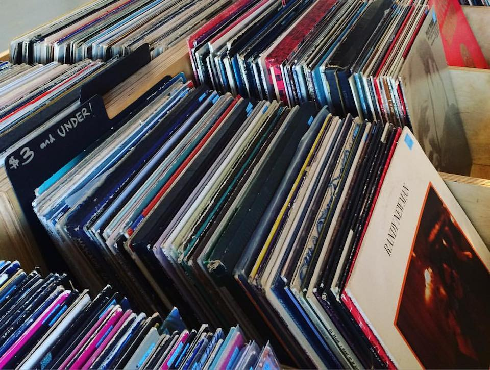

|
|

|
|
Hello there! My name is John, and I love music. On this site I'll be talking about some
of my favorite albums and artists, and even doing some reviews. Here's a little bit about me and
how I came to love music: Around the time that I was 9 or 10, I discovered the itunes store, on which
I would spend hours exploring and making lists of songs that I wanted. At this point, I didn't stray
far out of the realm of pop music. Then, I discovered Coldplay, a band that bridges pop styles with rock
electronic, and many other genres. Coldplay was my gateway into the wider musical universe, putting me
on the path to some of my favorite artists and eclectic musical tastes. Currently, I listen to just about everything,
including: rock to pop, indie, grunge, shoegaze, post-punk, IDM, rap, ambient, alternative, synth pop, electronic,
lo-fi, industrial rap, jazz, plunderphonics, new wave, glam rock, trance, classical, modern clasical,
hip-hop, trip-hop, noise rock, punk, or folk, and everything in between (except for country, but Wilco might be
changing my mind).
My love of listening to music (as well as a certain chain of events involving a head injury, long story)
has also led me to begin playing instruments, including the piano, guitar, synthesizer, and bass, which has
become my passion.
Sadly, though, I don't really know anyone who likes the music I do. I created this site so that I can express
my opinions and share my love of music with others!
|